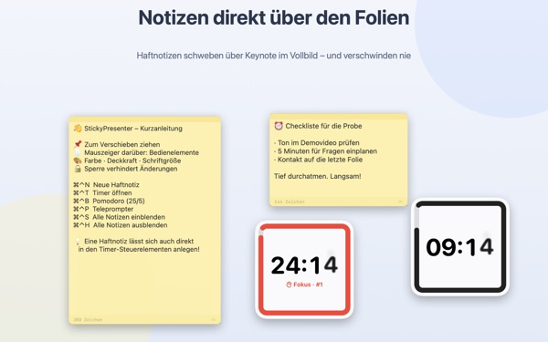
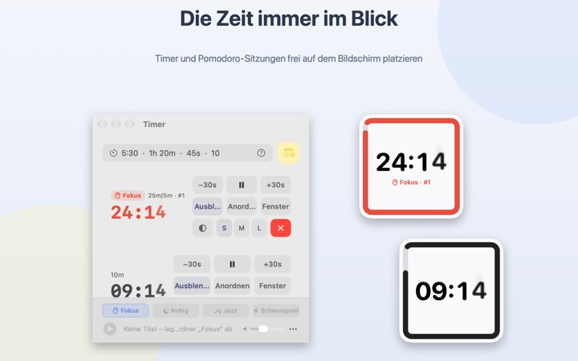
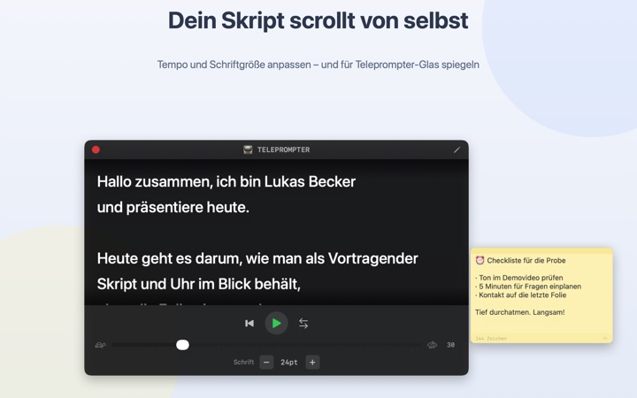
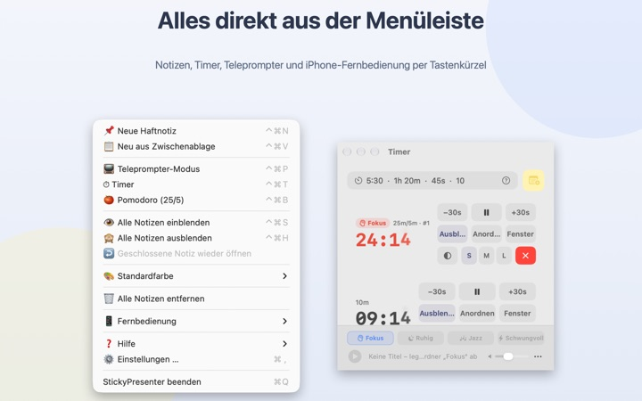

Skript und Restzeit
direkt auf der Folie
Schalte Keynote in den Vollbildmodus, und deine Haftnotizen und der Timer bleiben darüber sichtbar. Sie nehmen der Präsentations-App nie den Fokus, dein Presenter blättert also weiter wie gewohnt.
Alle Funktionen sind kostenlos. Ab macOS 14.

Probier es auf einer Folie aus
Gib eine Zeit so ein wie in der App. Tippe auf 15s und sieh, wie das Widget dich kurz vor Schluss warnt.
Wohin mit Skript und Uhr, während du präsentierst?
Die Referentenansicht braucht einen zweiten Bildschirm, und der Blick auf die Armbanduhr fällt dem Publikum immer auf. Vielleicht hast du auch schon mal einen Zettel an den Laptop geklebt, der dann abgefallen ist. StickyPresenter heftet Skript und Restzeit direkt über die Folie, dorthin, wo dein Blick ohnehin ist.
Ein Blick, und du weißt, wie viel Zeit bleibt
Ein quadratisches Widget in der Ecke zeigt die Restzeit. Kurz vor Schluss wird es rot, und wenn die Zeit um ist, ertönt ein Signal und der Rahmen blinkt.
Zeiten tippst du ganz locker ein, etwa 5:30 oder 1h 20m, und mit 25/5 wird daraus ein Pomodoro, der zwischen Fokus und Pause wechselt. Öffne einen Timer im eigenen Fenster, um bei Bildschirmfreigabe oder AirPlay nur dieses Fenster zu zeigen.

Skript lesen und in die Kamera schauen
Der Teleprompter scrollt dein Skript im eingestellten Tempo und hält am Ende von selbst an. Skript kopieren, ⌘⌃P drücken, und er öffnet sich mit genau diesem Text.
Für Teleprompter mit Spiegelglas gibt es einen Spiegelmodus, und Tempo und Schriftgröße bleiben fürs nächste Mal erhalten.

Du bleibst auf der Folie
Die App läuft unauffällig in der Menüleiste, ohne Dock-Symbol und ohne Fenster, um die du dich kümmern musst. Kurzbefehle wie ⌘⌃N für eine neue Notiz oder ⌘⌃T für Timer funktionieren auch mitten in Keynote im Vollbild.
Auf der Bühne startest und pausierst du den Timer mit der kostenlosen iPhone-App Remote Controller for Sticky und schiebst das Widget beiseite, wenn es eine Folie verdeckt.

In drei Schritten startklar
- 1
App öffnen
In der Menüleiste erscheint ein Notizsymbol, und beim ersten Start öffnet sich eine kurze Anleitung.
- 2
Notiz und Timer anlegen
Skript kopieren und
⌘⌃Vdrücken, dann die Vortragsdauer ins Timerfeld tippen. - 3
Ab in den Vollbildmodus
Notiz und Timer bleiben obenauf.
Kurzbefehle und Zeitformate
- ⌘⌃N
- Neue Haftnotiz
- ⌘⌃V
- Neue Notiz aus der Zwischenablage
- ⌘⌃T
- Timer ein- oder ausblenden
- ⌘⌃B
- Pomodoro starten (25 Min. Fokus, 5 Min. Pause)
- ⌘⌃P
- Teleprompter
- ⌘⌃S · ⌘⌃H
- Alle Notizen ein- oder ausblenden
- 10
- Eine Zahl allein bedeutet Minuten (10 Min.)
- 5:30 · 1:15:00
- Minuten:Sekunden, Stunden:Minuten:Sekunden
- 1h 20m · 45s
- Mit Einheiten
- 25/5
- Fokus/Pause im Wechsel, bis du stoppst
Alle Kurzbefehle nutzen Befehl (⌘) und Control (⌃) zusammen und funktionieren auch, während du in einer anderen App bist. Timer gehen bis 99:59:59.
Häufige Fragen
Ist das wirklich kostenlos?
Ja. Alle Funktionen sind kostenlos, und die iPhone-App Remote Controller for Sticky ist eine eigene, kostenlose App. Wenn dir die App hilft, kannst du dem Entwickler in den Einstellungen ein Trinkgeld geben; freigeschaltet wird dadurch nichts.
Kann ich bei Bildschirmfreigabe oder Spiegelung nur den Timer zeigen?
Ja. Über die Taste Fenster in der Zeile des Timers öffnest du ihn als normales Fenster. Dann erscheint er in der Fensterliste von Bildschirmfreigabe und AirPlay, und du kannst nur dieses Fenster teilen.
Ich habe ein Timer-Widget ausgeblendet und finde es nicht mehr.
Fahre im Timerfenster mit dem Zeiger über die Zeile dieses Timers, dann wird die Position des Widgets gestrichelt umrandet. Mit Anordnen holst du es zurück neben das Timerfenster.
Ich habe versehentlich eine Notiz geschlossen.
Über Geschlossene Notiz wieder öffnen in der Menüleiste holst du jede der letzten 20 zurück. Notizen werden beim Tippen gespeichert und stehen nach einem Neustart der App wieder an derselben Stelle.
Ein Kurzbefehl funktioniert nicht.
Steht er in der Kurzbefehl-Tabelle der Anleitung als Von anderer App belegt, hat eine andere App ihn zuerst reserviert. Beende diese App, dann klappt es wieder. Eine Bedienungshilfen-Berechtigung ist nicht nötig.
Warum fragt das Chamäleon-Design nach Bildschirmaufnahme?
Chamäleon liest die Farbe des Bildschirms hinter dem Widget und passt sich daran an, dafür braucht es diese Berechtigung. Es wird nichts gespeichert oder gesendet. Ohne sie funktionieren die Designs System, Hell und Dunkel ganz normal.
Wie füge ich Hintergrundmusik hinzu?
Wähle in der Musikleiste unten im Timerfenster eine Stimmung (Fokus, Ruhig, Jazz oder Schwungvoll), und die App legt für jede Stimmung einen Ordner an. Leg deine eigenen Titel hinein, dann laufen sie der Reihe nach zum Timer. Die App bringt keine Musik mit.
Die iPhone-Fernbedienung findet meinen Mac nicht.
Prüfe der Reihe nach: Läuft StickyPresenter auf dem Mac (Symbol in der Menüleiste)? Sind beide Geräte im selben WLAN und nicht im Gästenetz oder Mobilfunk? Ist Lokales Netzwerk unter Datenschutz & Sicherheit auf iPhone und Mac erlaubt? Ist das VPN aus?
Die Fernbedienung meldet einen falschen Kopplungscode.
Gib den vierstelligen Code ein, der gerade unter Fernbedienung in der Menüleiste des Mac steht. Hast du auf Neuer Kopplungscode geklickt, gilt nur der neue. Nach dem ersten Koppeln verbindet sie sich, sobald du die App öffnest.
Kann jemand anderes meinen Timer steuern?
Nicht ohne deinen Code. Der Mac akzeptiert nur Fernbedienungen mit dem richtigen Code, über eine verschlüsselte Direktverbindung im lokalen Netzwerk. Hat jemand den Code gesehen, nutze Neuer Kopplungscode oder Gekoppelte Fernbedienungen entfernen unter Fernbedienung in der Menüleiste.
Wo werden meine Notizen und Skripte gespeichert?
Nur auf diesem Mac. Es gibt kein Konto und keine Werbung, und außer anonymen Nutzungsstatistiken und Feedback, das du selbst sendest, geht nichts ins Internet.
Fragen, Fehler oder Ideen? Schreib an mizzking75@gmail.com.